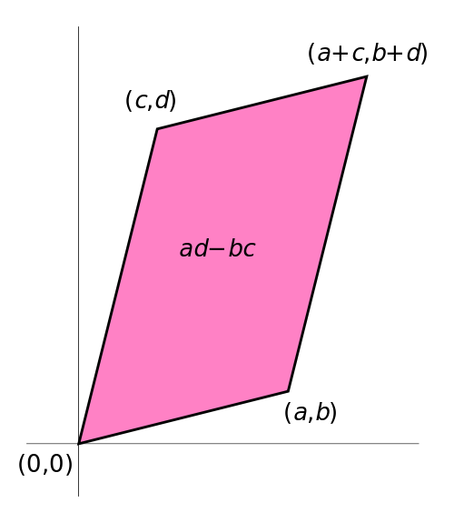

Chapter 1 Matrix Manipulation
Learning Outcomes
- Perform basic vector and matrix operations of addition and multiplication
- Perform matrix operations of transpose and inverse.
1.1 Introduction
Almost all of the calculations done in classical statistics require formulas with large number of subscripts and many different sums. In this chapter we will develop the mathematical machinery to write these formulas in a simple compact formula using matrices.
1.2 Types of Matrices
We will first introduce the idea behind a matrix and give several special types of matrices that we will encounter.
1.2.1 Scalars
To begin, we first define a scalar. A scalar is just a single number, either real or complex. The key is that a scalar is just a single number. For example, \(6\) is a scalar, as is \(-3\). By convention, variable names for scalars will be lower case and not in bold typeface.
Examples could be \(a=5\), \(b=\sqrt{3}\), or \(\sigma=2\).
1.2.2 Vectors
A vector is collection of scalars, arranged as a row or column. Our convention will be that a vector will be a lower cased letter but written in a bold type. In other branches of mathematics is common to put a bar over the variable name to denote that it is a vector, but in statistics, we have already used a bar to denote a mean.
Examples of column vectors could be \[\boldsymbol{a} = \left[\begin{array}{c} 2\\ -3\\ 4\end{array}\right] \;\;\;\;\; \boldsymbol{b}=\left[\begin{array}{c} 2\\ 8\\ 3\\ 4\\ 1 \end{array}\right]\]
and examples of row vectors are
\[ \boldsymbol{c}=\left[\begin{array}{cccc} 8 & 10 & 43 & -22\end{array}\right] \]
\[ \boldsymbol{d}=\left[\begin{array}{ccc} -1 & 5 & 2\end{array}\right] \]
To denote a specific entry in the vector, we will use a subscript. For example, the second element of \(\boldsymbol{d}\) is \(d_{2}=5\). Notice, that we do not bold this symbol because the second element of the vector is the scalar value \(5\).
1.2.3 Matrix
Just as a vector is a collection of scalars, a matrix can be viewed as a collection of vectors (all of the same length). We will denote matrices with bold capitalized letters. In general, I try to use letters at the end of the alphabet for matrices. Likewise, I try to use symmetric letters to denote symmetric matrices.
For example, the following is a matrix with two rows and three columns \[ \boldsymbol{W}=\left[\begin{array}{ccc} 1 & 2 & 3\\ 4 & 5 & 6 \end{array}\right] \] and there is no requirement that the number of rows be equal, less than, or greater than the number of columns. In denoting the size of the matrix, we first refer to the number of rows and then the number of columns. Thus \(\boldsymbol{W}\) is a \(2\times3\) matrix and it sometimes is helpful to remind ourselves of this by writing \(\boldsymbol{W}_{2\times3}\).
To pick out a particular element of a matrix, I will again use a subscripting notation, always with the row number first and then column. Notice the notational shift to lowercase, non-bold font. \[ w_{1,2}=2\;\;\;\;\;\;\textrm{and }\;\;\;\;\;\;\;w_{2,3}=6 \]
There are times I will wish to refer to a particular row or column of a matrix and we will use the following notation \[ \boldsymbol{w}_{1,\cdot}=\left[\begin{array}{ccc} 1 & 2 & 3\end{array}\right] \] is the first row of the matrix \(\boldsymbol{W}\). The second column of matrix \(\boldsymbol{W}\) is \[ \boldsymbol{w}_{\cdot,2}=\left[\begin{array}{c} 2\\ 5 \end{array}\right] \]
1.2.4 Square Matrices
A square matrix is a matrix with the same number of rows as columns. The following are square \[ \boldsymbol{Z}=\left[\begin{array}{cc} 3 & 6\\ 8 & 10 \end{array}\right]\;\;\;\;\;\;\boldsymbol{X}=\left[\begin{array}{ccc} 1 & 2 & 3\\ 2 & 1 & 2\\ 3 & 2 & 1 \end{array}\right] \]
1.2.5 Symmetric Matrices
In statistics we are often interested in square matrices where the \(i,j\) element is the same as the \(j,i\) element. For example, \(x_{1,2}=x_{2,1}\) in the above matrix \(\boldsymbol{X}.\)
Consider a matrix \(\boldsymbol{D}\) that contains the distance from four towns to each of the other four towns. Let \(d_{i,j}\) be the distance from town \(i\) to town \(j\). It only makes sense that the distance doesn’t matter which direction you are traveling, and we should therefore require that \(d_{i,j}=d_{j,i}\).
In this example, it is the values \(d_{i,i}\) represent the distance from a town to itself, which should be zero. It turns out that we are often interested in the terms \(d_{i,i}\) and I will refer to those terms as the main diagonal of matrix \(\boldsymbol{D}\).
Symmetric matrices play a large role in statistics because matrices that represent the covariances between random variables must be symmetric because \(Cov\left(Y,Z\right)=Cov\left(Z,Y\right)\).
1.2.6 Diagonal Matrices
A square matrix that has zero entries in every location except the main diagonal is called a diagonal matrix. Here are two examples: \[ \boldsymbol{Q}=\left[\begin{array}{ccc} 4 & 0 & 0\\ 0 & 5 & 0\\ 0 & 0 & 6 \end{array}\right]\;\;\;\;\;\;\;\;\boldsymbol{R}=\left[\begin{array}{cccc} 1 & 0 & 0 & 0\\ 0 & 2 & 0 & 0\\ 0 & 0 & 2 & 0\\ 0 & 0 & 0 & 3 \end{array}\right] \] Sometimes to make matrix more clear, I will replace the \(0\) with a dot to emphasize the non-zero components. \[ \boldsymbol{R}=\left[\begin{array}{cccc} 1 & \cdot & \cdot & \cdot\\ \cdot & 2 & \cdot & \cdot\\ \cdot & \cdot & 2 & \cdot\\ \cdot & \cdot & \cdot & 3 \end{array}\right] \]
1.2.7 Identity Matrices
A diagonal matrix with main diagonal values exactly \(1\) is called the identity matrix. The \(3\times3\) identity matrix is denoted \(I_{3}\). \[ \boldsymbol{I}_{3}=\left[\begin{array}{ccc} 1 & \cdot & \cdot\\ \cdot & 1 & \cdot\\ \cdot & \cdot & 1 \end{array}\right] \]
1.3 Operations on Matrices
1.3.1 Transpose
The simplest operation on a square matrix matrix is called transpose. It is defined as \(\boldsymbol{M}=\boldsymbol{W}^{T}\) if and only if \(m_{i,j}=w_{j,i}.\)
\[ \boldsymbol{Z}=\left[\begin{array}{cc} 1 & 6\\ 8 & 3 \end{array}\right]\;\;\;\;\;\;\boldsymbol{Z}^{T}=\left[\begin{array}{cc} 1 & 8\\ 6 & 3 \end{array}\right] \] \[ \boldsymbol{M}=\left[\begin{array}{ccc} 3 & 1 & 2\\ 9 & 4 & 5\\ 8 & 7 & 6 \end{array}\right]\;\;\;\;\;\boldsymbol{M}^{T}=\left[\begin{array}{ccc} 3 & 9 & 8\\ 1 & 4 & 7\\ 2 & 5 & 6 \end{array}\right] \] We can think of this as swapping all elements about the main diagonal. Alternatively we could think about the transpose as making the first row become the first column, the second row become the second column, etc. In this fashion we could define the transpose of a non-square matrix.
\[ \boldsymbol{W}=\left[\begin{array}{ccc} 1 & 2 & 3\\ 4 & 5 & 6 \end{array}\right] \]
\[ \boldsymbol{W}^T=\left[\begin{array}{cc} 1 & 4 \\ 2 & 5 \\ 3 & 6 \end{array}\right] \]
1.3.2 Addition and Subtraction
Addition and subtraction are performed element-wise. This means that two matrices or vectors can only be added or subtracted if their dimensions match. \[ \left[\begin{array}{c} 1\\ 2\\ 3\\ 4 \end{array}\right]+\left[\begin{array}{c} 5\\ 6\\ 7\\ 8 \end{array}\right]=\left[\begin{array}{c} 6\\ 8\\ 10\\ 12 \end{array}\right] \] \[ \left[\begin{array}{cc} 5 & 8\\ 2 & 4\\ 11 & 15 \end{array}\right]-\left[\begin{array}{cc} 1 & 2\\ 3 & 4\\ 5 & -6 \end{array}\right]=\left[\begin{array}{cc} 4 & 6\\ -1 & 0\\ 6 & 21 \end{array}\right] \]
1.3.3 Multiplication
Multiplication is the operation that is vastly different for matrices and vectors than it is for scalars. There is a great deal of mathematical theory that suggests a useful way to define multiplication. What is presented below is referred to as the dot-product of vectors in calculus, and is referred to as the standard inner-product in linear algebra.
1.3.4 Vector Multiplication
We first define multiplication for a row and column vector. For this multiplication to be defined, both vectors must be the same length. The product is the sum of the element-wise multiplications. \[ \left[\begin{array}{cccc} 1 & 2 & 3 & 4\end{array}\right]\left[\begin{array}{c} 5\\ 6\\ 7\\ 8 \end{array}\right]=\left(1\cdot5\right)+\left(2\cdot6\right)+\left(3\cdot7\right)+\left(4\cdot8\right)=5+12+21+32=70 \]
1.3.5 Matrix Multiplication
Matrix multiplication is just a sequence of vector multiplications. If \(\boldsymbol{X}\) is a \(m\times n\) matrix and \(\boldsymbol{W}\) is \(n\times p\) matrix then \(\boldsymbol{Z}=\boldsymbol{XW}\) is a \(m\times p\) matrix where \(z_{i,j}=\boldsymbol{x}_{i,\cdot}\boldsymbol{w}_{\cdot, j}\) where \(\boldsymbol{x}_{i,\cdot}\) is the \(i\)th column of \(\boldsymbol{X}\) and \(\boldsymbol{w}_{\cdot, j}\) is the \(j\)th column of \(\boldsymbol{W}\). For example, let \[ \boldsymbol{X}=\left[\begin{array}{cccc} 1 & 2 & 3 & 4\\ 5 & 6 & 7 & 8\\ 9 & 10 & 11 & 12 \end{array}\right]\;\;\;\;\;\;\;\;\;\boldsymbol{W}=\left[\begin{array}{cc} 13 & 14\\ 15 & 16\\ 17 & 18\\ 19 & 20 \end{array}\right] \] so \(\boldsymbol{X}\) is \(3\times4\) (which we remind ourselves by adding a \(3\times4\) subscript to \(\boldsymbol{X}\) as \(\boldsymbol{X}_{3\times4}\)) and \(\boldsymbol{W}\) is \(\boldsymbol{W}{}_{4\times2}\). Because the inner dimensions match for this multiplication, then \(\boldsymbol{Z}_{3\times2}=\boldsymbol{X}_{3\times4}\boldsymbol{W}_{4\times2}\) is defined where \[\begin{aligned} z_{1,1} &= \boldsymbol{x}_{1,\cdot}\boldsymbol{w}_{\cdot,1}\\ &= \left(1\cdot13\right)+\left(2\cdot15\right)+\left(3\cdot17\right)+\left(4\cdot19\right)=170 \end{aligned}\]
and similarly
\[\begin{aligned} z_{2,1} &= \boldsymbol{x}_{2,\cdot}\boldsymbol{w}_{\cdot,1}\\ &= \left(5\cdot13\right)+\left(6\cdot15\right)+\left(7\cdot17\right)+\left(8\cdot19\right) \\ &= 426 \end{aligned}\]
so that
\[\boldsymbol{Z}=\left[\begin{array}{cc} 170 & 180\\ 426 & 452\\ 682 & 724 \end{array}\right]\]
For another example, we note that \[\left[\begin{array}{ccc} 1 & 2 & 3\\ 2 & 3 & 4 \end{array}\right]\left[\begin{array}{cc} 1 & 2\\ 2 & 2\\ 1 & 2 \end{array}\right] = \left[\begin{array}{cc} 1+4+3\;\;\; & 2+4+6\\ 2+6+4\;\;\; & 4+6+8 \end{array}\right] = \left[\begin{array}{cc} 8 & 12\\ 12 & 18 \end{array}\right] \]
Notice that this definition of multiplication means that the order matters. Above, we calculated \(\boldsymbol{X}_{3\times4}\boldsymbol{W}_{4\times2}\) but we cannot reverse the order because the inner dimensions do not match up.
1.3.6 Scalar times a Matrix
Strictly speaking, we are not allowed to multiply a matrix by a scalar because the dimensions do not match. However, it is often notationally convenient. So we define \(a\boldsymbol{X}\) to be the element-wise multiplication of each element of \(\boldsymbol{X}\) by the scalar \(a\). Because this is just a notational convenience, the mathematical theory about inner-products does not apply to this operation. \[5\left[\begin{array}{cc} 4 & 5\\ 7 & 6\\ 9 & 10 \end{array}\right]=\left[\begin{array}{cc} 20 & 25\\ 35 & 30\\ 45 & 50 \end{array}\right]\]
Because of this definition, it is clear that \(a\boldsymbol{X}=\boldsymbol{X}a\) and the order does not matter. Thus when mixing scalar multiplication with matrices, it is acceptable to reorder scalars, but not matrices.
1.3.7 Determinant
The determinant is defined only for square matrices and can be thought of as the matrix equivalent of the absolute value or magnitude (i.e. \(|-6|=6\)). The determinant gives a measure of the multi-dimensional size of a matrix (say the matrix \(\boldsymbol{A}\)) and as such is denoted \(\det\left(\boldsymbol{A}\right)\) or \(\left|\boldsymbol{A}\right|\). Generally this is a very tedious thing to calculate by hand and for completeness sake, we will give a definition and small examples.
For a \(2\times2\) matrix \[\left|\begin{array}{cc} a & c\\ b & d \end{array}\right|=ad-cb\]
So a simple example of a determinant is
\[\left|\begin{array}{cc} 5 & 2\\ 3 & 10 \end{array}\right|=50-6=44\]
The determinant can be thought of as the area of the parallelogram created by the row or column vectors of the matrix.

1.3.8 Inverse
In regular algebra, we are often interested in solving equations such as \[ 5x=15 \] for \(x\). To do so, we multiply each side of the equation by the inverse of 5, which is \(1/5\).
\[\begin{aligned} 5x & = 15\\ \frac{1}{5}\cdot5\cdot x &= \frac{1}{5}\cdot15\\ 1\cdot x &= 3\\ x &= 3 \end{aligned}\]
For scalars, we know that the inverse of scalar \(a\) is the value that when multiplied by \(a\) is 1. That is we see to find \(a^{-1}\) such that \(aa^{-1}=1\).
In the matrix case, I am interested in finding \(\boldsymbol{A}^{-1}\) such that \(\boldsymbol{A}^{-1}\boldsymbol{A}=\boldsymbol{I}\) and \(\boldsymbol{A}\boldsymbol{A}^{-1}=\boldsymbol{I}\). For both of these multiplications to be defined, \(\boldsymbol{A}\) must be a square matrix and so the inverse is only defined for square matrices.
For a \(2\times2\) matrix \[\boldsymbol{W}=\left[\begin{array}{cc} a & b\\ c & d \end{array}\right]\] the inverse is given by:
\[\boldsymbol{W}^{-1}=\frac{1}{\det\boldsymbol{W}}\;\left[\begin{array}{cc} d & -b\\ -c & a \end{array}\right]\]
For example, suppose \[\boldsymbol{W}=\left[\begin{array}{cc} 1 & 2\\ 5 & 3 \end{array}\right]\]
then \(\det W=3-10=-7\) and \[\begin{aligned} \boldsymbol{W}^{-1} &= \frac{1}{-7}\;\left[\begin{array}{cc} 3 & -2\\ -5 & 1 \end{array}\right]\\ \\ &= \left[\begin{array}{cc} -\frac{3}{7} & \frac{2}{7}\\ \frac{5}{7} & -\frac{1}{7} \end{array}\right] \end{aligned}\]
and thus \[\begin{aligned} \boldsymbol{W}\boldsymbol{W}^{-1} &= \left[\begin{array}{cc} 1 & 2\\ 5 & 3 \end{array}\right]\left[\begin{array}{cc} -\frac{3}{7} & \frac{2}{7}\\ \frac{5}{7} & -\frac{1}{7} \end{array}\right]\\ \\ \\ &= \left[\begin{array}{cc} -\frac{3}{7}+\frac{10}{7}\;\;\; & \frac{2}{7}-\frac{2}{7}\\ \\ -\frac{15}{7}+\frac{15}{7}\;\;\; & \frac{10}{7}-\frac{3}{7} \end{array}\right]\\ \\ &= \left[\begin{array}{cc} 1 & 0\\ 0 & 1 \end{array}\right]=\boldsymbol{I}_{2} \end{aligned}\]
Not every square matrix has an inverse. If the determinant of the matrix (which we think of as some measure of the magnitude or size of the matrix) is zero, then the formula would require us to divide by zero. Just as we cannot find the inverse of zero (i.e. solve \(0x=1\) for \(x\)), a matrix with zero determinate is said to have no inverse.
1.4 Exercises
Consider the following matrices: \[\mathbf{A}=\left[\begin{array}{ccc} 1 & 2 & 3\\ 6 & 5 & 4 \end{array}\right]\;\;\;\;\;\;\;\mathbf{B}=\left[\begin{array}{ccc} 6 & 4 & 3\\ 8 & 7 & 6 \end{array}\right]\;\;\;\;\;\;\;\mathbf{c}=\left[\begin{array}{c} 1\\ 2\\ 3 \end{array}\right]\;\;\;\;\;\;\;\mathbf{d}=\left[\begin{array}{c} 4\\ 5\\ 6 \end{array}\right]\;\;\;\;\;\;\;\mathbf{E}=\left[\begin{array}{cc} 1 & 2\\ 2 & 6 \end{array}\right]\]
- Find \(\mathbf{Bc}\)
- Find \(\mathbf{AB}^{T}\)
- Find \(\mathbf{c}^{T}\mathbf{d}\)
- Find \(\mathbf{cd}^{T}\)
- Confirm that \[\mathbf{E}^{-1}=\left[\begin{array}{cc} 3 & -1\\ -1 & 1/2 \end{array}\right]\] is the inverse of \(\mathbf{E}\) by calculating \(\mathbf{E}\mathbf{E}^{-1}=\mathbf{I}\).